~9 How to Copy and Paste Keyframes in DaVinci Resolve on Fusion Page~
7/27/2026
~ Part 2~
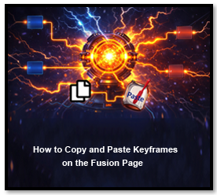
Even though, you may have started out on the Edit page. And then you decided to add text to your page. ‘Oh, what did I ever do that for?’ you are thinking, because if you add text to your project. You will have to move over to the Fusion page, to work with it. Weather you want to or not.
Watch it-Text is one of those got-cha things. If you add a generated background, and then drop text onto it, it will throw you into a fusion clip on your timeline. Once you have been thrown into a fusion clip, you have been fusioned, and the keyframe panel on the edit page, will be locked out to you.
Edit Page
So, then, let’s start out on the Edit page, in the DaVinci app.
On the Cut page, you can easily find a tab for Titles, but on the Edit page, you have to go through a few more steps to get to it.
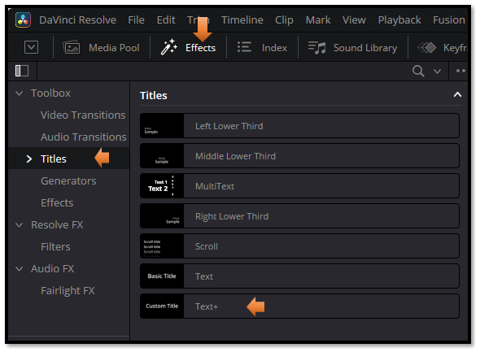
Watch It! this is where things might go a bit haywire. We could have added a movie clip with a background on it, or pulled a image down on the timeline, but we did not. Instead we did this.
Effects-Generator-Background
With a background in there, you can see the clip on the timeline, and you can also see that this background clip has generated nodes in the fusion panel
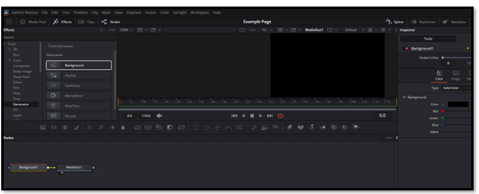
This will add a background to the timeline for you to work on.
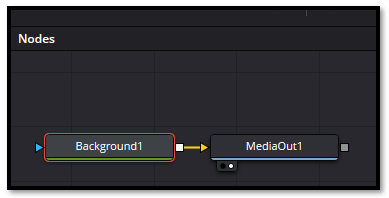
After checking out the nodes on the fusion page, make sure you jump back to the edit page.
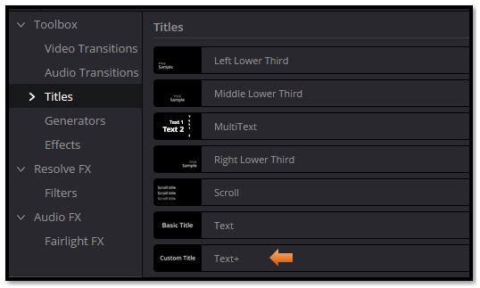
- Add a Text+
Drag and drop the text from the left panel and place it on the center screen
Your background layer on the timeline should look like this
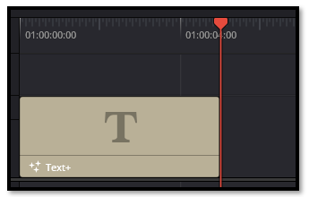
Click on the clip that is on the timeline to bring up your settings in the Inspector.
Animate something using your Inspector
Start out in the text tab and set how you want the text to look. Make sure you set the starting look on frame one, and then you can do whatever you want.
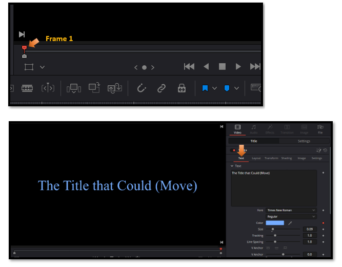
Now in the Inspector move over to the Layout tab, to move the text, we could move it left, right, top, or bottom. I want it to start moving off of the screen, to the right. Make sure DaVinci knows what you want your starting point to be, so make sure you set a diamond to red, on frame one. Right now the Inspector has our Center X and Y set to 0.5. This setting will position the text smack dab in the center of the screen.
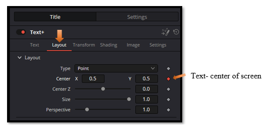
- Move the playhead to change the position in the video and click the diamond, at each new position, to set a few keyframes
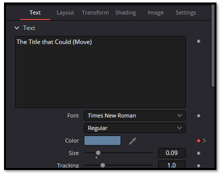
Remember to also set your last frame, so animation knows what it is doing, when it ends. Setting the Center X to 1.381, will move our text off of the screen to the right.
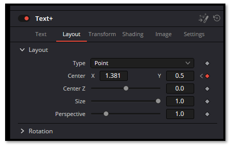
Ok, you can look at your Keyframe panel inside of your Edit page, but you will see absolutely no keyframes. This is because you are using text, and your Edit page, will not recognize your animation key frames.
See, no keyframes, and it also says you have no parameters when you know you animated the Center X to make that text move.
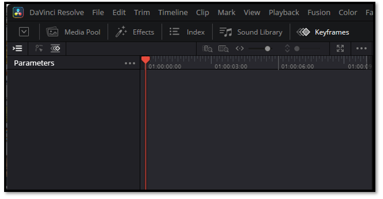
Fusion Page
Hit your Fusion tab to go to the Fusion page.
On the top, sort of to your right. Hit the Spline tab
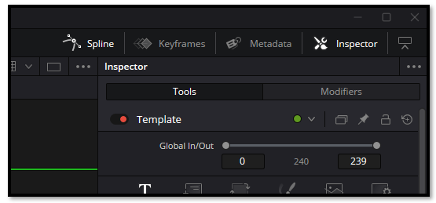
Now look at the bottom of the screen to the right of the node panel. You will see your spline panel, just trying to peek out.
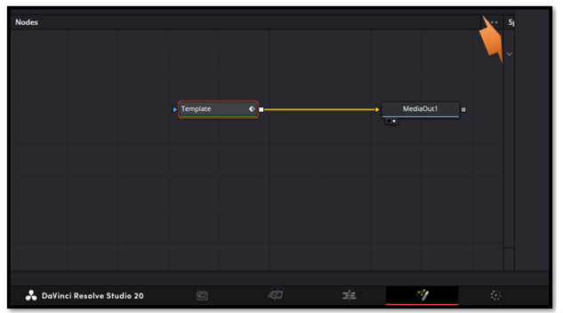
Pull that panel out so we can see it.
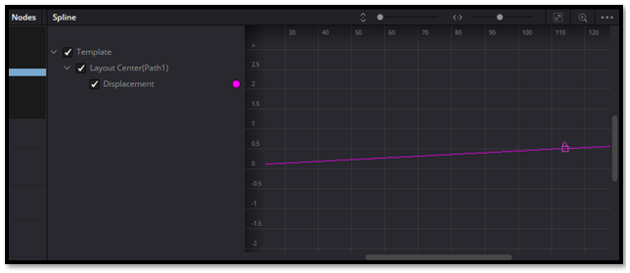
But if you look at your graph, you will only be seeing one little lock, when we know we set about 3 keyframes, those icons that look like locks represent the key frames.
Slide this slider to the left to view all of your key frames.
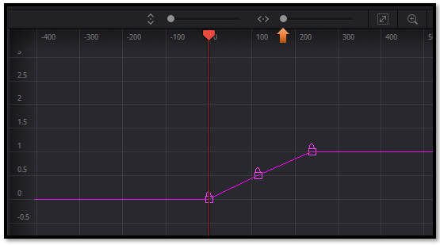
Now we can draw select all the keyframes.
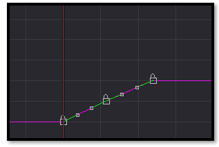
Right click directly on the line on the spline graph.
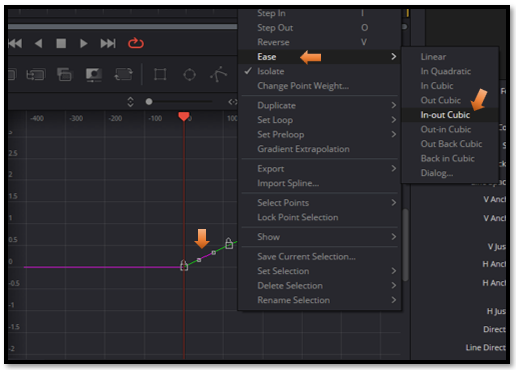
Your graph will change to represent the easing.
Spline Panel on Fusion Page
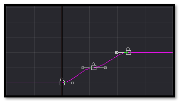
Edit Page
Go back to the edit page, now if we want to duplicate the key frames, we will need something to paste them into. So, we need to create another one of those text clips. Move the playhead to after the first clip.
Remember background first and then slide the text clip down on top of it, on the timeline, or drag into the viewport.
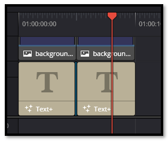
Kick the second clip in the pants
This second clip needs a little push before fusion will recognize it fully and give you full access to the keyframes. Sometimes this happens. So, just know what to do when it does.
This second clip was a bit pickier, and so the animation needed to be done on the Fusion page. Before anything became visible in the Spline panel.
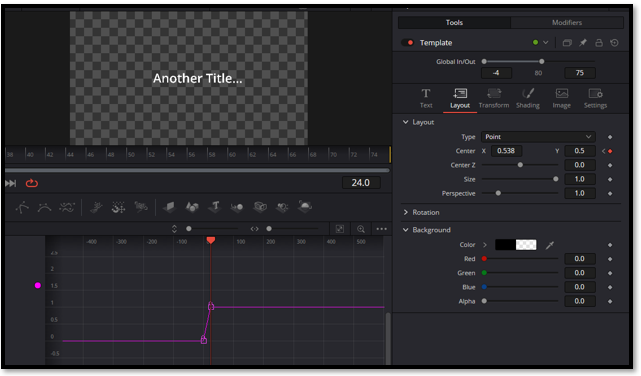
Click on the first clip, and also move the playhead back over the first clip, then go back to Fusion Page.
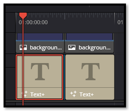
Watch it- If you do not see your keyframes in the spline panel, you forgot to click on the first clip, or moved the playhead over the first clip, so go back to Edit page, and fix it, and then come back to the Fusion page again.
Now go to the Spline panel and select the keyframes.
Watch it, do not right click and try to select something from the context menu that pops up, to try and duplicate these frames. You either want to do a ctrl-C or go to the top Menu Select Edit- Copy. To copy these frames.
Now go back to the Edit Page, and select the second clip, and move the playhead over the second clip.
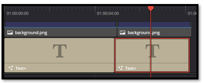
Go back to the Fusion page, and hit ctrl-C or top Menu Select Edit-Paste. And look the keyframes with the easing has been completely brought over into the new clip.
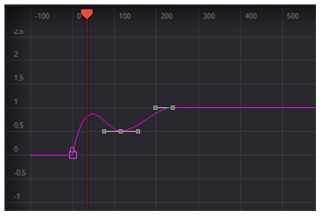
Fusion may throw a few curveballs, but now you know exactly how to handle them. Once you understand how nodes wake up, how parameters activate, and how the Spline panel decides what to show, copying and pasting keyframes becomes a smooth, reliable part of your workflow. Don’t be discouraged by the quirks — every challenge you work through makes you stronger and more fluent in Fusion’s logic. You’ve got this.